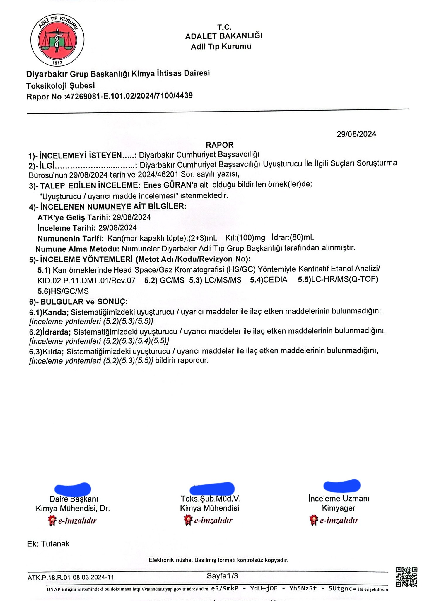

Narin: Çağın Karanlık Yüzü - 5
Sonuç yerine: Güran Ailesi ne anlatsın?

Yalnızlaştırılan Bir Aile: Güranların Sessizliği
Güran Ailesi, sistematik bir kamuoyu ve medya baskısı sonucunda tümüyle sahipsiz ve yapayalnız bırakıldı. İsyan ettirici bir inatla, bir kuytuda gerçekleşen ve hiçbir şekilde görmedikleri bir olay hakkında konuşmaya zorlandılar. Sanırsınız ki dünya üzerinde böyle bir şey ilk kez vuku buluyor. Sanırsınız ki küçük bir kız çocuğunun, pedofil bir sosyopat, bundan da öte aileye bir anlaşmazlık nedeniyle hınç besleyen bir katil tarafından bir kuytuda kıstırılıp öldürülmesine benzer bir olay dünya üzerinde hiç yaşanmamış.
“Narin Davası” duruşmaları boyunca, Yüksel, Arif, Enes, Salim ve de avukatları saatler süren ifadelerinde anlattılar anlattılar. Anlatabilecekleri tek şeyi diğer bir deyişle her şeyi anlattılar. O gün ne yaptıklarını, nasıl bir aile olduklarını, sonraki günlerde olanları anlattılar. Yana yakıla anlattılar. Anlatabilecekleri sadece bu kadardı. Ancak katile katil olmayı adeta layık görmeyen koskoca bir ülke, “Neden susuyorsunuz” deyip durdu. Bütün çıplaklığıyla ortada duran basit hakikati neden gösteremediniz diye ailenin hayatı, haysiyeti ve itibarı üzerinde herkes tepindi, tepinmeye devam ediyor.
Şimdi o minnacık bedeni ve kırık dökük Türkçesiyle Yüksel Güran, biricik yavrusunun o gün eve varamadığını, kendi evinin yüz metre aşağısında ve evdeki aile üyelerinin asla göremeyeceği kör bir noktada, bir kuytulukta kıstırılıp hayattan koparıldığını kime ve nasıl anlatsın? “Neden susuyor” diyene, ne cevap versin? Her şeyi gören kameraların da günlerce incelenmeyip görmez hale getirildiğini, kameraların zamanında ve gerektiği gibi incelenmemiş olmasının suçunun bile kendi ailesine yüklendiğini kime söylesin?
Kayıp Gününde İhmaller Zinciri
Evet, stratejik noktalardaki kameralar 18 gün boyunca hiç incelenmemiş ve bu kameralar sadece 15 gün kayıt tutabiliyormuş. İncelenen kameralar ise güya aile çocuğun kaybolduğu saatten iki saat geç bir saati işaret ettiği için, saat 18.00’den sonrasına bakmak suretiyle incelenmiş! Köyden iki kişinin Narin’i akşam saatlerinde gördüğünü söylemesi ve amcanın da doğal ve kaçınılmaz olarak bu bilgiyi jandarmaya iletmiş olması, aileye yöneltilen akıl almaz “kolluğu yanıltma” suçunun en temel gerekçesini oluşturuyor.
Kolluk Soruşturmasındaki Akıl Almaz Hatalar
Düşünün ki elinizin, tam elinizin altında bir kamera kaydı var ve evinden öğlen saatlerinde çıkıp bir daha dönememiş bir çocukla ilgili bir iz arıyorsunuz? Bu kameraları incelemekten sorumlu olan kolluk görevlilerinin köyde ondan bundan duydukları “Narin’i şu saatte gördük” sözlerine itibar ederek basit bir kamera incelemesini o saatten başlatmaları nasıl açıklanabilir? Bu nasıl bir sorumsuzluktur?
Bir çocuk kaybolmuşsa hiç değilse kaybolduğu günün erken saatlerinden itibaren onun yolunu gören bütün kameraların incelenmesi, sadece çocuğu değil etrafta şüphe uyandıracak bir şey olup olmadığını tespit etmek için bile olsa gerekmez miydi? Amca Salim Güran’a hayatı dar eden iddiaların temelinde de köydeki iki çocuğun Narin’i akşam saatlerinden sonra gördükleri iddiasını jandarmaya tekrar etmiş olması var. Salim Güran’ın Jandarmaya bu bilgiyi aktardığı görüşmenin ses kaydı da burada.
Salim Güran’ın ses kaydı [1]
Görüldüğü üzere Salim Güran telefon konuşması esnasında etraftan duyduğunu tam da yapması gerektiği gibi Jandarma komutanına aktarıyor. Köydekilerin, belki çocukça bir sorumsuzlukla belki yanlışlıkla pek düşünmeden Narin’i akşam saatlerinde gördüklerini söylemiş olması, daha sonra çocukların da bunu tekrar eden amcanın da hayatını karartıyor. Jandarma ya da genel olarak kolluk, zamanında ve gerektiği gibi yapmamış, yapamamış olduğu bütün incelemelerin yükünü omuzundan atarken bir aileyi yakıyor ve bir köy ateşe verilmiş oluyor. Şimdi bunu bile bile bu haksızlığa nasıl göz yumabiliriz?
Enes Güran’ın Savunması ve Adli Gerçekler
Peki Enes Güran ne yapsın, ne anlatsın? O saatlerde evinde olduğu, zaten kepçe operatörü olarak çalıştığı Malatya Arguvan’dan gece yarısından sonra döndüğü ve bütün anlattıklarının gerçek olduğu, tanıklıklardan sonra şimdi de adli bilişim uzmanı tarafından telefon imaj kayıtları üzerinden ayrıntılı biçimde açığa çıkarılmış olan Enes Güran derdini kime anlatsın?
Ailesinin geçimine katkı için 18 yaşında ağır bir işte çalışmaya başlamış ve esasen çocukluktan henüz çıkmış Enes Güran’ın, maruz kaldığı iftiralar ve akıl almaz iddialar sonrasında mahkemede hâlâ insicamını koruyor olması bile bir mucizeydi. O da anlattı anlattı anlattı… Ne sorulduysa yanıtladı, isteyen savunmasına hemen ulaşabilir ama sorumsuzca, vicdansızca hâlâ “Neden susuyorlar” diye soran kişilere Enes ne desin?
Örneğin Enes’in uyuşturucu kullandığına dair iddialar daha ilk günlerde doktor raporuyla çürütüldü. Bu konudaki raporu da paylaşıyorum ama Narin Kumpas Davası’nda da tıpkı siyasi kumpas davalarında olduğu gibi hiçbir delil, hiçbir belge kabul görmüyor, çünkü vicdanlar kararmış…

Nevzat Bahtiyar ve Görmezden Gelinen Şüpheler
Aile, Narin’in kayıp olduğu günlerde kendilerine kimseyle bir husumetleri olup olmadığı sorulduğunda Nevzat Bahtiyar’ı işaret ediyor. Onlara çalıntı araba sattığı anlaşılan Nevzat’la olayın açığa çıkmasını müteakip bir anlaşmazlık yaşandığını ve Nevzat’ın yaşadıkları zarar karşılığında kendilerine 50 bin lira gibi bir para ödediğini söylüyor[3]. Bu konudaki ifadeleri dikkate alınmıyor ve kendilerine “50 bin lira için çocuğa zarar verilir mi” nevinden bir cevap veriliyor. Oysa her dönem yaşanan çok benzer olaylar var. Mesela Türkiye’de DNA analizi ile çözülen şu ilk olay[4] ne kadar zalim, ne kadar benzer ve ne kadar düşündürücü. Diyarbakır’da yakın tarihlerde 200 bin lira için bir baba ve oğul öldürüldü ve yakıldı. Kimse duymadı mı?
Kısacası Güran Ailesi böyle bir anlaşmazlık dile getirmişse, ilgili kişinin derhal ve ciddi biçimde sorgulanması gerekiyordu. Güranlar olay böyle geçiştirilince, Narin’in arandığı günlerde yanlarından ayrılmayan ve destek olmaya çalışıyor görünen Nevzat’tan şüphelenmeyi akıl edemiyor. Zaten o derece ağır suçlamalarla karşılaşmışlar ki sürüklendikleri savunma pozisyonundan çıkıp neyin ne olabileceğine ilişkin muhakeme etme yetenekleri adeta felç olmuş. Yüzlerce jandarma, onlarca gazeteci, gelenler gidenler, durmadan konuşanlar, dedikodular ve kem bakışlar arasında herkesten ve her şeyden, hatta kendilerinden şüphelenir hale gelmişler.
Dolayısıyla Deccal hakkında bir daha düşünme ya da konuşma şansları olmamış. Bu konuda aileye yöneltilen bir diğer suçlama, olay günü köyde bir kırmızı araçtan söz edildiğinde bunun Nevzat’ın aracı olduğunu hemen söylememiş olmaları. Oysa Nevzat’ın Narin’in cansız bedenini içinde taşıyarak köyden çıkardığı araç anlaşıldığı kadarıyla kendisine ait değil, oğluna ait ve oğlu da köyde yaşamıyor. Bu nedenle de köyden çıkarken görüldüğü anlaşılan bu aracı her kim gördüyse zaten tanımıyor. Bir kırmızı araçtan söz edildiğinde de kimsenin aklına doğal olarak Nevzat’ın kullandığı ve uzaktan gördüklerinde tanıyabilecek kadar bilmedikleri arabası gelmiyor.
‘Niye Sustular?’ Sorusunun Yanıtsızlığı
Niye sustular deniyor, niye konuşmadılar diye soruluyor. Oysa ki sorulması gereken şey şuydu: Eğer Salim Narin’i öldürüp cansız bedenini Nevzat’a ortadan kaybetmek üzere verdiyse ve müştereken katil aile her şeyi biliyorsa, Nevzat o teselli tiyatrolarını 19 gün boyunca kime sahneliyordu, ona niçin hiç kimse biraz uzak dur, ortalıkta dolaşma filan demiyordu?
Medyanın Ön Yargısı ve ‘Nevzat Yapmaz’ Algısı
Medya ve kamuoyu, “Nevzat böyle bir şey yapmaya asla cesaret edemez” diyerek derhal onu cinayet olayının dışına çıkardı. “Nevzat onların tavuğuna ‘kış’ diyemez” diyen bir komşu ya da akrabanın sözlerine bile mahkemede ehemmiyet atfedildi ve adeta Nevzat’ın suçsuzluğuna kanıt olarak gösterildi.
Oysa çocuk katillerinin birçoğu suçlarının bedelini zaten hayatıyla ödüyor. Birçoğu cezaevine girmelerinden kısa süre sonra şüpheli intiharlar sonucunda hayatını kaybediyor. Kimisi daha dışarıdayken öldürülüyor. Birçoğu yıllarca hapis yatıyor. Bütün bunlar hiçbir şekilde caydırıcı olmuyor. Empati duygusundan yoksun sosyopat çocuk katilleri zaten davranışlarının sonuçlarını enine boyuna tartıp biçecek bir muhakeme yeteneğine de sahip görünmüyor.
Nevzat, Narin’in üzerine üç taş koyup başında her nedense uzunca süre oyalandıktan sonra köye dönüyor, baldızından peynir alıyor, çay içiyor… İnternet trafiği analizine bakılırsa[5], Narin’in okul kamerasından kaybolduğu saatten cansız bedeninin dere kenarına götürülüp gömüldüğü dakikaların sonrasına kadar internete hiç girmiyor.
Adalet Arayışının Bedeli ve Umut Işığı
Hasılı, Güran Ailesine ve hatta tüm Tavşantepe köyüne kuşaklar boyunca etkisi sürecek bir travma yaşatıldı. Şimdi bana “Başka işin mi yok” diyenlere de cevabım bu olsun. Seçim bölgemde yaşanan bu korkunç olayın hakikatinin ortaya çıkmasında, kuşakları etkileyecek bu travmanın hafifletilmesinde ve suçsuz günahsız insanların itibarlarının iade edilmesinde bir rolüm olduysa ya da olacaksa, sadece bu bile vekillik görevimi layıkıyla yapmış olduğumu gösterir. Böyle düşünüyorum. O derece mühim bir hadise ile karşı karşıyayız. Kaldı ki zaten başka çok ama pek çok işle de uğraşıyorum, uğraşıyoruz.
Bizden Olmayana Sahip Çıkma Etiği
Narin’in ailesinin suçsuzluğuna ilişkin kanaat giderek çok daha fazla kişi tarafından paylaşılıyor. Bunda Yılmaz Demiroğlu, Onur Akdağ, Mustafa Demir, Mahir Akbilek ve M. Fatih Demir olmak üzere, korkunç bir sosyal baskı altında en başından beri gerçekten kahramanca bir adalet mücadelesi veren Güran ailesinin avukatlarının payı her şeyden ve herkesten çok. Avukatlar bir yandan kamuoyunu bilgilendirmeye, bir yandan bunu yaparken sosyal medya ortamında bir düzeyi, bir vakarı korumaya çalışıyorlar. Adalet arayışının bununla ne kadar ilişkili olduğunun farkındalar. Fevrilik olmasın aile zarar görmesin diye de çırpınıyorlar.
Siyaset Üstü Bir Vicdan Meselesi
Bana gelince, seçim bölgemdeki bu adalet arayışına destek olmaya çabalarken, hâlâ, “Bu aile sizi köyden kovdu,” “Salim Güran mahkemede DEM Partilileri kovdum dedi” sözleriyle karşılaşıyorum. Açıkçası bunun ailenin masum olma ihtimaline nasıl bir gölge düşürdüğünü hiç anlayamıyorum. Muhtemelen şunu söylemek istiyorlar: Bu aile suçsuz bile olsa onların suçsuzluğunu dile getirmek size/bize mi kalmış, bırakın cezalarını çeksinler. Çağın karanlık yüzü dediğim şey bununla da ilişkili maalesef. Bizden olmayanlara kolaylıkla suç atfetme, hem de öyle böyle bir suç atfetme değil…
Suçsuz insanlara müebbet hapis cezasıyla cezaevinde çürüyüp gidecekleri bir suç atfetmeyi öneren bu etik dışı adalet anlayışı gerçekten tiksinti verici. Öncelikle şunu belirtmeliyim; Narin’in kayıp olduğu günlerde köye gittim. Köyde ne bana ne beraberimdeki heyete en ufak bir kabalık yapıldı. 45 dakika kadar Narin’in ana-baba evinde oturduk, kaygılarına ortak olduk, iyi dileklerimizi ilettik ve çıktık. Ama evet ikinci duruşmada Salim Güran’ın bu sözlerini ben de kendi kulaklarımla duydum.
Orada da öyle düşündüm, şimdi de aynısını düşünüyorum. Salim Güran çaresizce AKP iktidarına, devlete güveniyordu ve partimizle bir yakınlık içinde oldukları düşünülürse bu beladan asla sıyrılamayacaklarına kanaat getirmişti. Bu yüzden de “DEM Parti’yi köyden kovdum” demişti. Yoksa partimize bir sempatisi olmasa bile bunu mahkemede dile getirmesi için hiçbir neden yoktu. Herhangi bir kesimi hele ki Diyarbakır’da sekiz milletvekili çıkarmış bir partiyi karşısına almazdı.
Öyle korkunç bir kapana kısılan herkes o tarihte siyasi iktidarın DEM Parti’yi ağır biçimde hedef alan kriminalleştirme girişimlerinin hafızasıyla muhtemelen böyle davranırdı. Her neyse, sebebi ne olursa olsun, koskoca bir siyasi partinin, bu ülkenin üçüncü büyük partisinin hak ve adalet arayışını, kendisine yönelik sempatinin tayin edebileceğini veya etmesi gerektiğini düşünmek gerçekten çok şaşırtıcı.
DEM Parti’nin nasıl büyük bir mücadele tarihini miras aldığını iyi biliyoruz. Varsayalım ki kovulduğu bir köy, haksız yere ateşe atıldığında hiçbir üyesi dönüp bakmayacaksa bu miras hiç hak edilmemiş ve bu mirastan bugüne hiç ama hiçbir şey kalmamış demektir. Bundan da öte, ülke gündemini Iğdır’dan İmralı’ya etkilemiş ve meşgul etmiş olan bu konuda bütün bu hesapların ve ideolojik farklılıkların üzerine çıkan bir adalet arayışının nasıl mümkün olabileceğini düşünmek önemli bence. Böyle bir adalet arayışı var ve bu bana büyük umut veriyor.
Toplumsal Barışa Giden Yol: Ortak Etik Tavır
Narin için biraraya gelen farklı illerden, farklı meslek gruplarından ve farklı ideolojilerden isimlerin gecelerini gündüzlerine katarak ortak gruplar oluşturarak yarattıkları mücadele zemini çok değerli. Kendi imkanlarıyla Narin için animasyon filmi yaptıran ve olayın basitliğini anlatmaya çalışan yurttaşlar var. Bu animasyon filmini ben de profil resminde milliyetçi simgeler olan olan birinden paylaşmışım. O filmi o adresten paylaştığımda bir iki arkadaşım hesabımın hacklendiğini düşünmüş.
Oysa paylaşırken buna odaklanma gereği duymamıştım. Çünkü, doğru dürüst Türkçe bilmeyen Kürt bir aileye ve onlar için adalete canı gönülden sahip çıkan, gecesini gündüzüne katarak didinen bir Türk milliyetçisinin çabası ve buradaki etik tutumu görmezden gelinmemelidir. Çünkü bu ülkede ortak bir geleceğimiz olacaksa, siyaset üstü bazı konularda ortak etik tavır almak da bu geleceğin bir garantisi olacak. Başka yolu yok.
Narin’in ailesi için adalet isteyen ve onları savunanların ülkesinde çok sayıda DEM Partili de var. Benim çabama sık sık sosyal medyada “Partimle gurur duyuyorum” diyerek destek veriyorlar. Ben de gurur duyuyorum o zaman.
Bu ülke eğer gerçek bir demokrasi ve toplumsal barış kültürünü zehirli biçimde kutuplaşmış bir iklim içinde yeşertebilecekse, bu insanlar sayesinde olacak. Konfor alanını terk eden, sorumluluk hisseden, “Ama olay karışık, ama uzun yazdınız, ama onlar da çelişkili beyanlarda bulundu” demeden, geceyi gündüze katarak her bir iddianın aslını ve medya dezenformasyonuyla tahrif edilmiş versiyonunu açığa çıkaran insanlar sayesinde. İş kolayken ve medya dedikodularıyla yürüyorken geniş geniş konuşup, zorlaştığında sırtını dönenlerle değil…
Zira toplumsal barış ve normalleşme her şeyden evvel bir kültür meselesidir; yukarıdan aşağıya zahmetsizce inşa edilemez ve dikte edilemez. Narin hakikatinin basitliğini bütün güçlüğüne rağmen kavrayanlar ve bir arada gece gündüz bu konuyu gündemde tutanlar, böyle bir kültürün de müjdecisidir…
Dış Bağlantılar
- https://x.com/frhttk34/status/1939011111409615068
- https://x.com/mustafademir21_/status/1902349893814915571
- https://bbnhaber.com.tr/genel/narin-davasinda-3-gun-baba-arifle-itirafci-nevzat-arasindaki-alisveris-ne-162702h
- https://www.haberturk.com/son-dakika-turkiyede-dna-analizi-ile-cozulen-ilk-cinayet-turkiyeyi-sarsan-cifte-cinayet-nasil-cozuldu-3604218
- https://x.com/tuncaybesikci/status/1912337268796252635